Active Node, collection search, Target and color popovers now follow the surrounding panel's text scale. Wider panels no longer enlarge them. Standard body text is 11 logical units and section titles are 12; compound cards normally render at 315 logical units wide. Original BVT glass, theme roles, spring motion and exact-owner context menus remain shared.
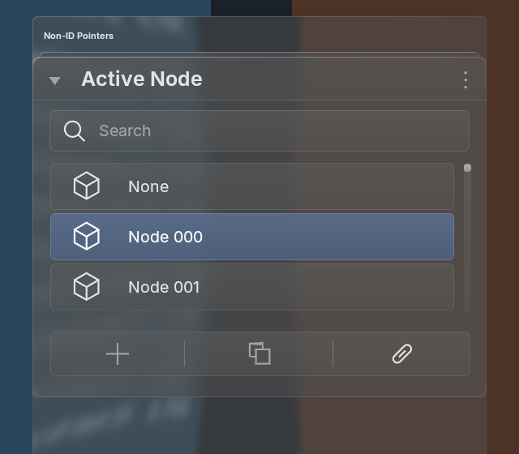
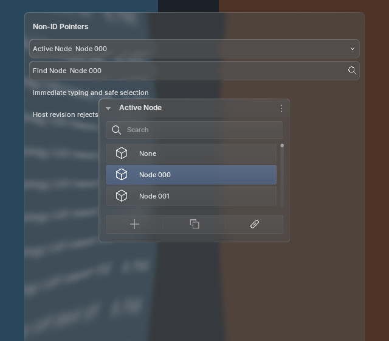
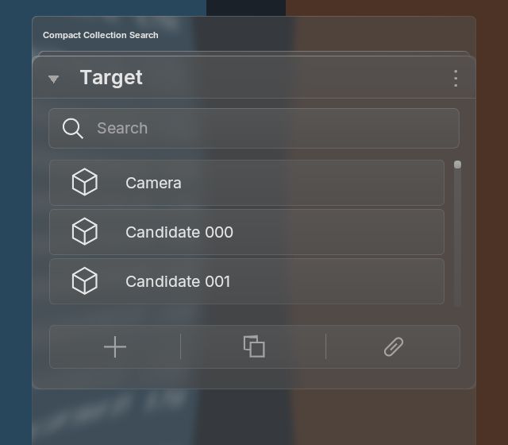
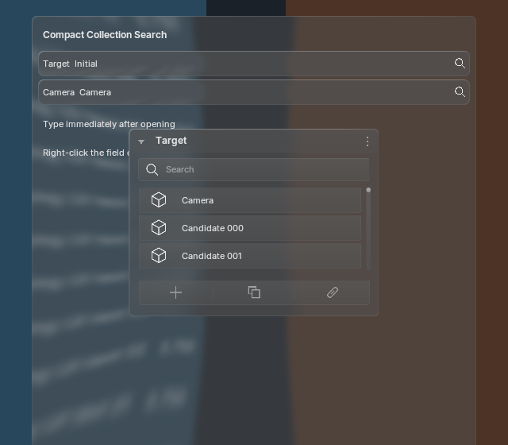
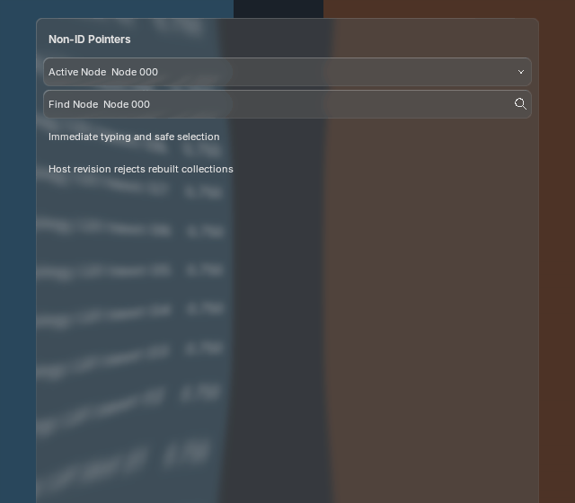
All 100 animation frames match with native text batching enabled and disabled on each tested runtime. One shared backdrop production, one blur and five offscreens remain retained. These are Blender captures, not browser recreations.
Each capture includes surrounding standard fields for scale comparison. Choose the physical rendering scale; images stay at the same logical display width below. Click an image for its full-resolution file. This audits rendered scale, not every OS display configuration.
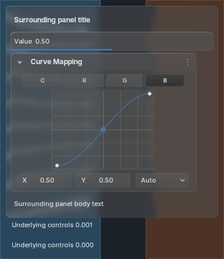
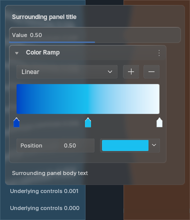
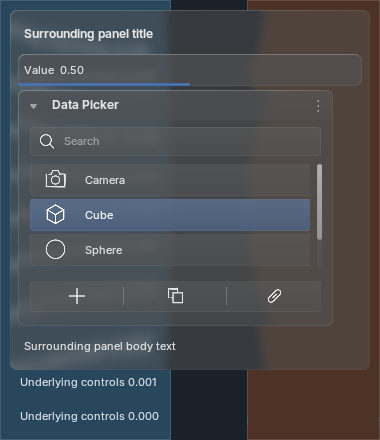
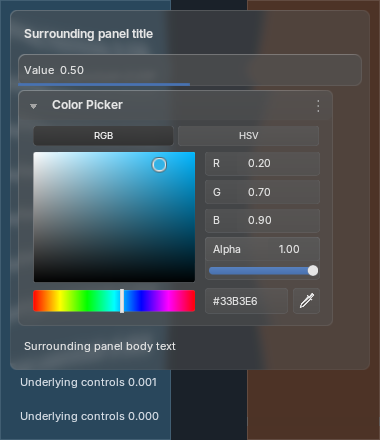
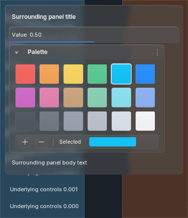
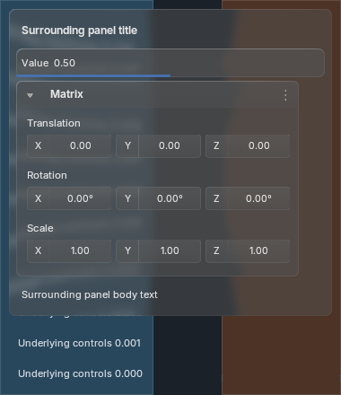
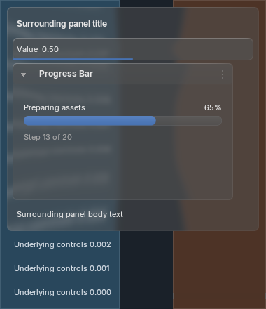
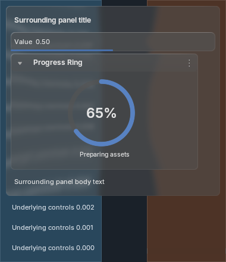
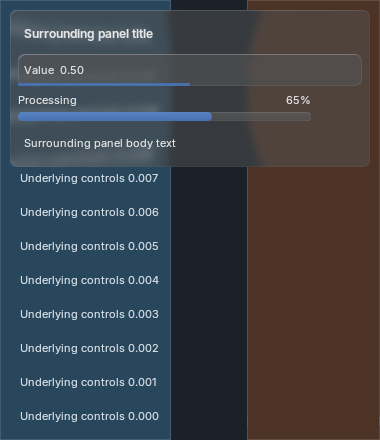
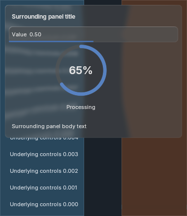
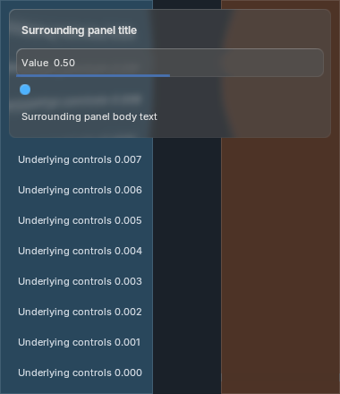
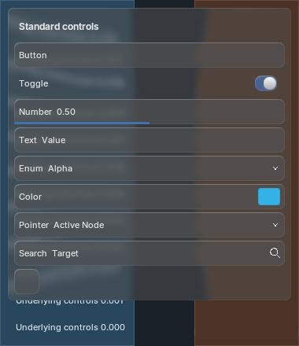
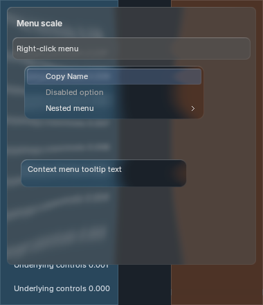
39 captures per Blender version cover 13 families at three scales, with byte-identical native/standalone text output and stable warm rendering resources. RNA and window-input checks cover pointer/search selection, color edits and cancellation, exact palette ownership, resized clips, context actions and teardown. Large progress percentages intentionally remain larger data readouts.
Blender 5.1.2 and 5.2.2 / macOS arm64 / Metal / factory active theme. Existing generated references and older galleries remain immutable; Tyler's scale correction supersedes their oversized presentation. Exact generated-reference acceptance and full API parity remain open. Blender 4.2 execution, other platforms and arbitrary tiny viewport readability are not established here.
5.2 all-family capture/timings · 5.1 all-family capture/timings · 5.2 Active Node motion/timings · 5.1 Active Node motion/timings · Target/search capture · Before/after provenance · Scale/input checks · Sizing contract